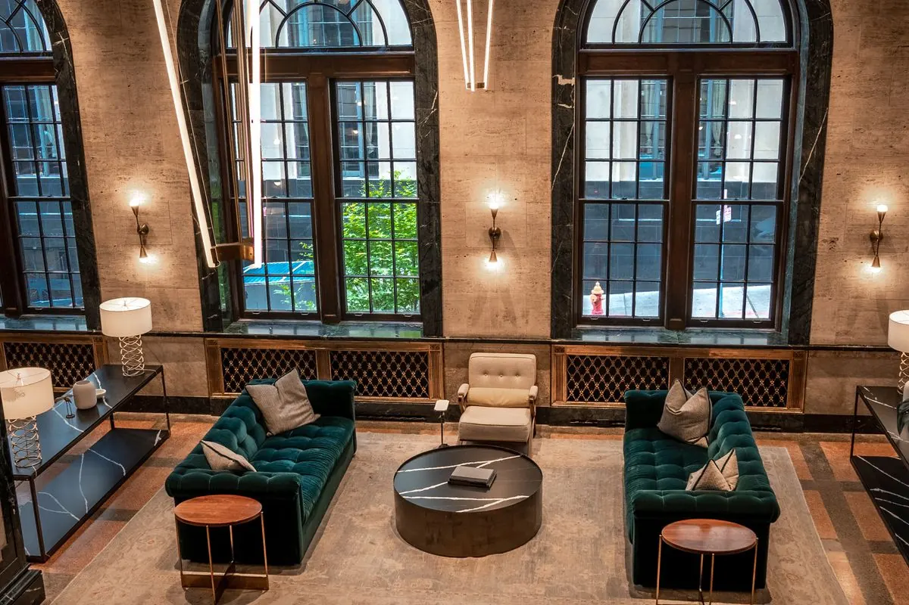
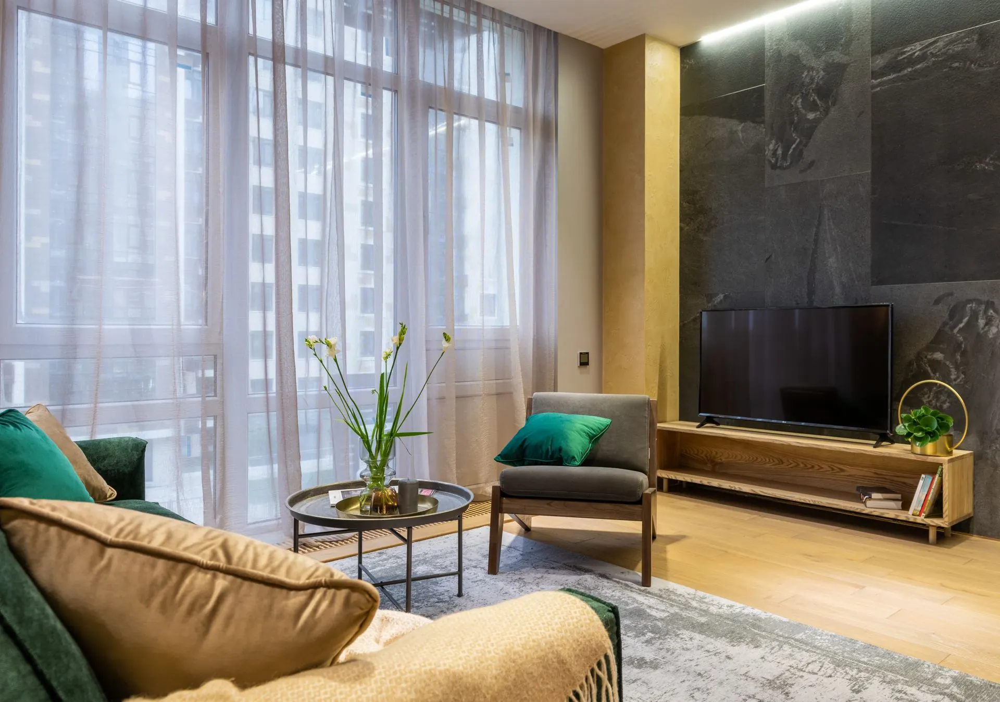
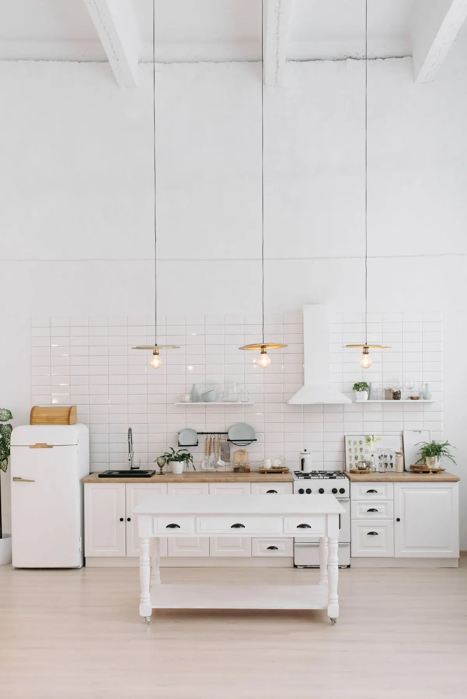

01 / TADİLAT & YENİLEMEYeni bir mekân.
Yeni bir mekân.
Yeni bir hikâye.
Otel, daire ve site tadilatı. Mekânınıza bütüncül bir yaklaşım.
↗
Bir odadan bütün bir otele; yaşam alanlarınızı
25 yıllık deneyim ve özenli işçilikle yeniliyoruz.
Sektör deneyimi
A’dan Z’ye tadilat
Bir arada yapı çözümleri
İlk fikirden son dokunuşa,
yanınızda bir ekip.
Yenileme, uygulama ve son detaylar.
İhtiyacınız olan uzmanlığı aynı çatı altında buluşturuyoruz.

Otel, daire ve site tadilatı. Mekânınıza bütüncül bir yaklaşım.
↗
Çatı, cephe, izolasyon ve tesisat çözümleriyle yapınıza değer katıyoruz.
↗Görseller hizmetlerimizi anlatmak amacıyla kullanılan temsili uygulama örnekleridir.
Yaşam ve çalışma alanlarınız için ihtiyaçlarınıza göre planlanan kapsamlı yenileme.
Birbiriyle uyumlu malzeme, işlevsel detaylar ve mekâna uygun uygulamalar.
Görünenden görünmeyene; yapınızın ihtiyaç duyduğu teknik uygulamalar.
YGT İnşaat Yapı Emlak olarak, her mekânın yeni bir başlangıcı hak ettiğine inanıyoruz.
25 yıllık sektör deneyimimiz, A’dan Z’ye tadilatını gerçekleştirdiğimiz 18 otel ve çok sayıda daire yenilemesiyle; küçük bir değişiklikten kapsamlı dönüşümlere kadar yanınızdayız.
Tecrübeli ekibimizle tadilat, tesisat, dış cephe ve mobilya ihtiyaçlarını birlikte ele alıyor, ihtiyaç duyduğunuzda mimari destek sağlıyoruz.
Ne istediğinizi dinliyor, yapılacak işleri
başından birlikte netleştiriyoruz.
İhtiyacınızı, mekânınızı ve beklentilerinizi telefon veya WhatsApp üzerinden konuşalım.
İşin kapsamını, malzemeleri ve uygulama takvimini projenize göre değerlendirelim.
Tecrübeli ekibimizle kararlaştırılan uygulamaları ve yenileme çalışmalarını yürütelim.
Uygulamaları birlikte kontrol edelim; kararlaştırılan temizlik ve son düzenlemeleri tamamlayalım.
Otel, daire ve site tadilatından çatı, dış cephe, mantolama, izolasyon, boya, asma tavan, elektrik ve su tesisatına kadar geniş bir alanda çalışıyoruz. Mobilya, mimari destek ve tadilat sonrası temizlik ihtiyaçlarını da projenin kapsamına göre ele alıyoruz.
Evet. Tek bir odanın boyanması, tesisat işi veya çatı tadilatı gibi belirli ihtiyaçlarınız için de bizimle iletişime geçebilirsiniz. İşin kapsamını ve uygunluğu birlikte değerlendiririz.
Fiyat ve süre; alanın büyüklüğüne, mevcut durumuna, malzeme seçimine ve yapılacak işlere bağlıdır. Mekân fotoğraflarını ve ihtiyaçlarınızı WhatsApp üzerinden ileterek ilk görüşmeyi başlatabilirsiniz.
Hizmet bölgesi ve ekibimizin uygunluğu hakkında bilgi almak için konumunuzu WhatsApp üzerinden paylaşabilir veya +90 542 646 05 85 numarasını arayabilirsiniz.
Evet. Mekânın ihtiyaçlarına göre mimari destek sağlıyor ve mobilya çözümleri sunuyoruz. Tasarım, malzeme ve uygulama ihtiyaçlarını projeniz özelinde birlikte değerlendirebiliriz.
Bir fikriniz ya da yapılacak işler listeniz mi var? Bize anlatın.